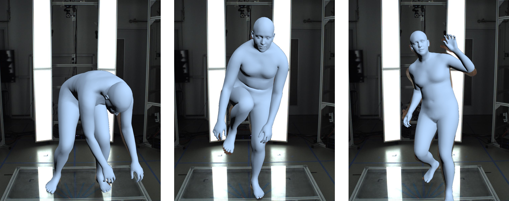
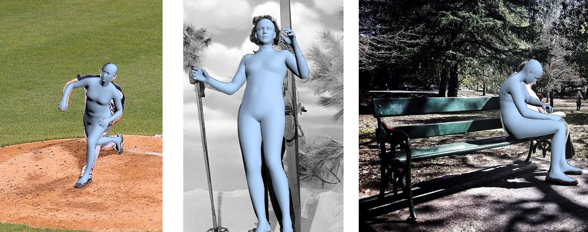
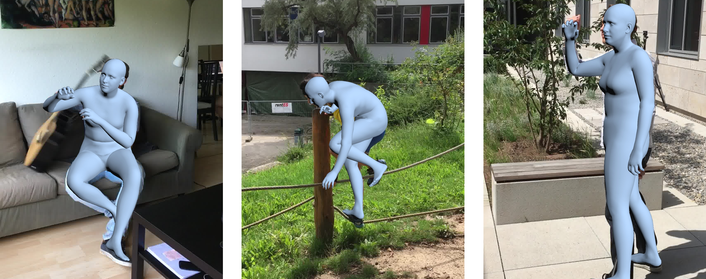
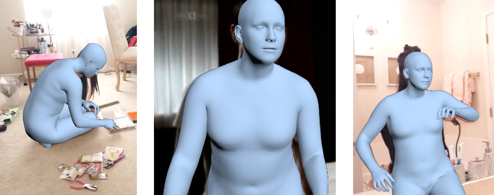

Human Mesh Recovery

Initialization using mean poses and default camera.

Initialization using the CLIFF model.

EHF dataset

COCO dataset

3DPW dataset

UBody dataset
More examples of DPoser’s fitting.
In Human Mesh Recovery (HMR), DPoser adeptly estimates poses from single images, achieving more natural poses that better align with the image data.